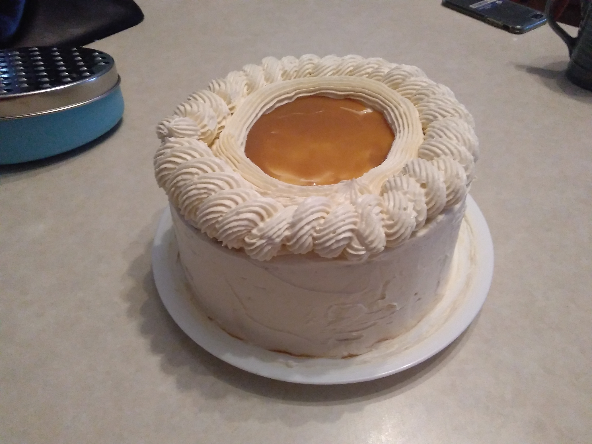

Mitchell MacDonald
Faculty of Software Engineering
- September 2020-present
- Bacholor of Science in Software Engineering
- Fredericton, New Brunswick
- Current GPA: 4.2
-
-
-
- June 2020
-
- September 2021 - December 2021
-
GlobalVision
- Used Selenium Java to create automated tests for websites
- Worked remotely and mostly independently; however, occasionally worked on a team
- Built my own computer
- Researched the parts
- Assembled the components
- Loaded the operating system
- Januray 2021 - April 2021
- CS1303
- Learned how to use SQL. Creating databases, queries, and stored procedures.
- Created some Java projects that interacted with a database
- Interacted with a Linux environment
-
-
-
Programming Skills: Java, C, Racket, JavaScript, Python, MatLab, Selenium
Operating Systems: Windows 10, linux
- Baking
- Biking
- Video Games
- Positive Action Committee (2018)
